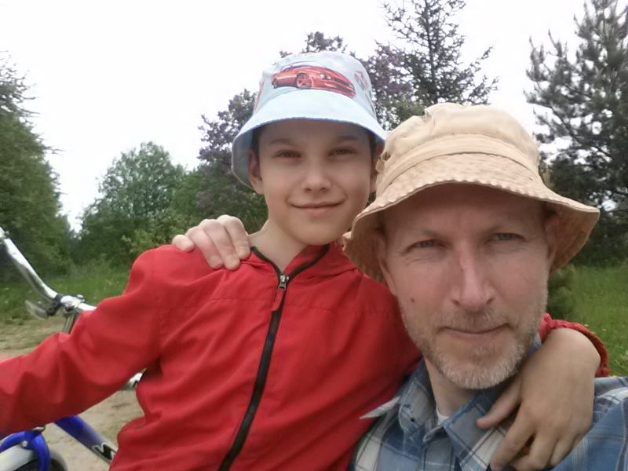
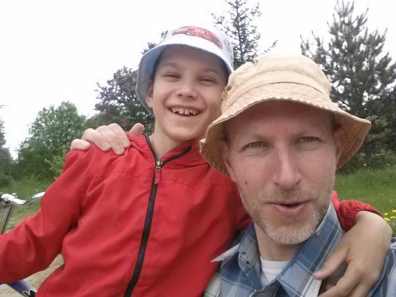

Новоржевские руины
Тринадцатого июня две тысячи двадцатого года мы с мамой поехали в путешествие по интересным местам Новоржевского района.
Побывал я в двух местах. Первая остановка была возле полуразрушенной церкви в деревне Посадниково. Называется она Церковь Казанской иконы Божией матери. Потом мы поехали на озеро Посадниково и перекусили. 
После этого мы поехали тоже в полуразрушенный барский дом Обольяниновых. Природа там очень красивая: вокруг усадьбы был парк с прудами, которые располагались каскадами, а из пруда в пруд текли ручьи. Видно, что когда-то давным-давно в одном из них были сложены камни, и был небольшой водопад. Со временем появились трещины, и вода начала через них вытекать, не образуя водопада. Вдоволь нагулявшись, мы поехали домой.
